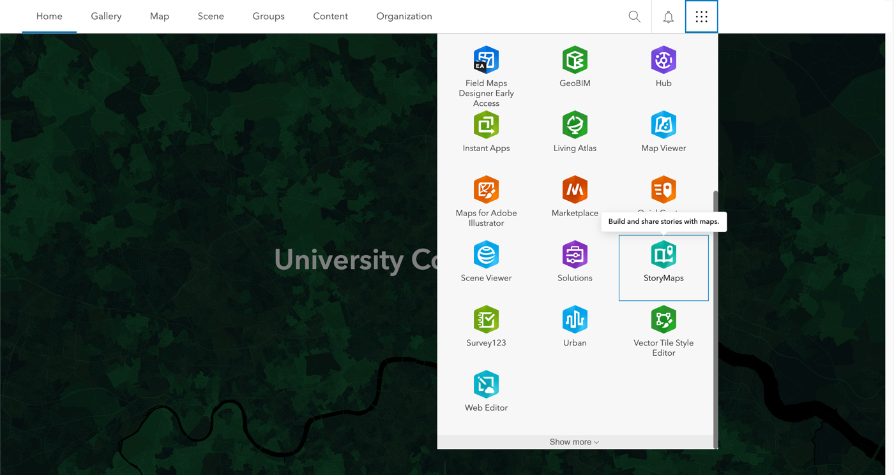
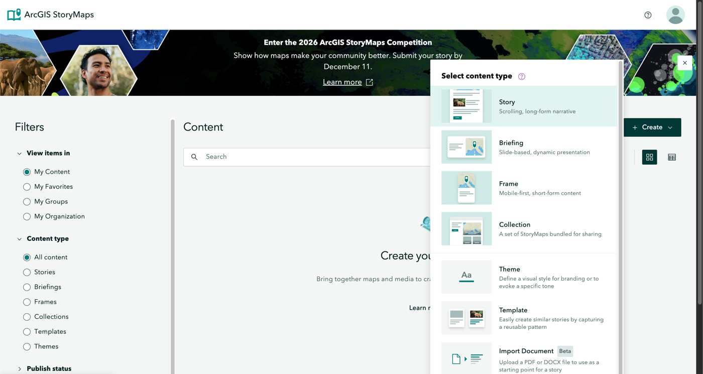
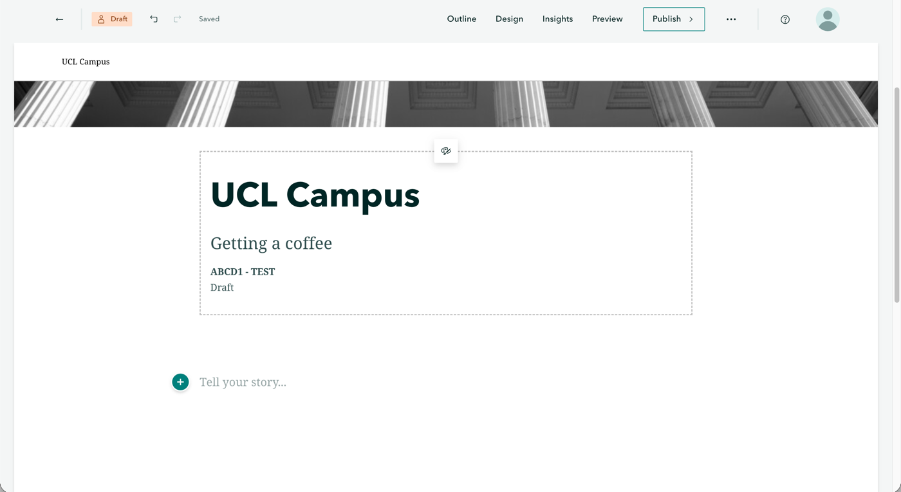

3 Building a Story Map
Last week, you made a map of your working group’s sites and route. This week, we will use that map as the centre of a story map: a web page, built in ArcGIS StoryMaps, that combines text, photos, video and your interactive map to tell a short story about your theme. A story map is also the format of the first GIS worksheet, so what you build in this session is the start of your submission.
Please make sure you have the following ready before the session starts:
- your saved web map from last week, which you can find in Content → My content;
- your working group’s photos and any videos, downloaded to the laptop you will be working on (your working group shares these in its own OneDrive folder);
- the worksheet brief for this task. The brief sets out what your story map must contain; this chapter shows you how to build it.
3.1 What is a story map?
A story map is a scrolling web page in which you can place a map right next to the text it belongs to. The reader scrolls through the story, and can also zoom, pan and click on the map. A good story map has a clear storyline, and every photo, video and map element is there because it supports that storyline.
For an example, have a look at Short revisit to the Cholera Outbreak in Soho, London (1854) by Dr Anwar Musah, who designed the original story map material for this module. It retells John Snow’s famous map of cholera deaths around the Broad Street water pump, and shows how text, images and an interactive map can work together. It uses different data and is longer than your story map can be, so use it for inspiration, not as a template.
Your story map must fit the theme your working group was allocated for the Urban Project. It is worth planning the storyline before you start building, by asking yourself three questions:
- What is the one thing you want a reader to understand about your theme in your study area?
- Which evidence do you have for it: which sites, which photos, and which part of your route?
- How will you split the story up? The worksheet limits the number of main sections, so decide what each section is for (for instance: the study area and aim, what you observed, and what you learned from the methods and the experience).
Write your headings down before you open the builder. This only takes five minutes, and it saves most of the time you would otherwise lose rearranging blocks.
ArcGIS StoryMaps changes its layout regularly. This chapter therefore describes what to click by its label. If a label has moved or been renamed, look for the closest equivalent, and ask in class if you cannot find it.
3.2 Create the story
Let us start by creating a new story and setting up its cover:
Go to https://uclondon.maps.arcgis.com and sign in with UCL SSO. Open the app launcher (the grid of nine dots, top right) and click StoryMaps. StoryMaps opens in a new tab.

Figure 1: Opening StoryMaps from the app launcher. Click Create → Story. This opens the story builder, in which you write directly in the page and add content with the + button that appears between blocks.

Figure 2: Creating a new story. Click on the title placeholder and type your main title. Keep it short and specific, and make it about your theme rather than something like “My story map”. You can add a subtitle underneath.
Below the subtitle is the byline, which shows your name by default. Replace it with your candidate number and your group code (for example
ABCD1 - CAT1_WG05, with the group code as in the title of your map). Please do not put your name anywhere in the story: a story map you submit as a formative worksheet does not need to be anonymous, but it may become part of your portfolio, which is marked anonymously, so it is easiest to leave your name out from the start.Choose a cover design that suits your theme, and pick a cover image from your working group’s photos.

Figure 3: Cover for the test walk, with a made-up candidate number and TESTin the byline. Your byline shows your own candidate number and group code.
Your story is saved automatically as a draft in your own ArcGIS Online content.
3.3 Add your text
To add text, click below the cover and start typing. Use Heading from the text style menu for each of your main sections, so that the story gets a clear structure and a navigation bar. Try to keep paragraphs short, because people read web pages differently from essays.
Write for a reader who was not on the trip. Your text should explain the aim, the place, and what you did and learned, in your own words. The worksheet sets the word limit.
3.4 Add your map
Next, we will add the web map you made last week:
- Click + where the map should go and choose Map.
- Select My content, choose the web map you saved last week, and click Add.
- If you are asked about sharing, agree to share the map at the same level as the story. You will make the story public at the end (see Share and submit).
- Use the map block’s Options to switch on the legend, the zoom buttons and the expand button (which lets the reader open the map full screen), and set the starting view to your study area.
- Click on a point to check that the pop-up still shows the site ID, note and photo.
If you would like the map to change as the reader scrolls through the text, you can try a Sidecar or Immersive block. These place the text in a panel that scrolls over a full-screen map. This is a nice extra, but it is not a requirement.
Your web map is a separate item from your story. If you change the map later, for example to restyle a layer, those changes will show up in the story automatically. Do not delete the web map or its layers before you have submitted.
3.5 Add photos and captions
Photos are where your story comes to life. To add one:
- Click + → Image and upload a photo from your computer. If uploads are slow, resize large photos first.
- Add a caption under every photo that says what it shows and why it matters for your story. If the photo comes from your working group’s shared folder, mention this.
- Add alt text, so that the image can be understood by someone using a screen reader.
Choose photos that support your argument: five good photos that you refer to in the text are better than fifteen that only decorate the page.
3.6 Add video
Short clips from the field can add atmosphere, or an interview, in a way that photos cannot. Adding a video works much like adding a photo:
- Click + → Video.
- Either Upload the file, or paste a link from a video site.
- Add a caption.
Keep your clips short, and check the worksheet for how many are allowed and how long they may be. Only include people who have agreed to be filmed.
3.8 Before you leave
By the end of this session, your story map should have:
You have until the worksheet deadline to finish your story map. You can use the remaining time to work on the text, add the remaining photos and videos, and check your story map against the brief.
3.9 Troubleshooting
| Problem | What to try |
|---|---|
| I cannot find my web map | Go to Content → My content, or search for GEOG0187. If you did not save it last week, do that first. |
| The map shows no photos in the pop-ups | Open the web map again and check that Attachments is switched on under Pop-ups. |
| The map does not load when signed out | Share the web map and its layers with Everyone (public), then reload the story in a private window. |
| My name is shown on the cover | Click the byline under the subtitle and replace your name with your candidate number and group code. Your portfolio is marked anonymously. |
| A photo or video upload fails | Reduce the file size, try a different browser, or use a link for the video. |
| I lost my story | Go to StoryMaps → My stories. Drafts are saved automatically. |